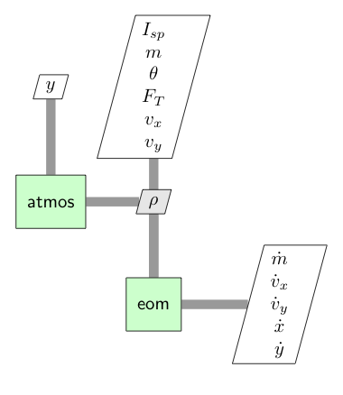

SSTO Earth Launch#
This example is based on the Time-Optimal Launch of a Titan II example given in Appendix B of Longuski [LGuzmanP14]. It finds the pitch profile for a single-stage-to-orbit launch vehicle that minimizes the time required to reach orbit insertion under constant thrust.

The vehicle dynamics are given by
The initial conditions are
and the final conditions are
Defining the ODE#
Generally, one could define the ODE system as a composite group of multile components. The atmosphere component computes density (\(\rho\)). The eom component computes the state rates. Decomposing the ODE into smaller calculations makes it easier to derive the analytic derivatives.

However, for this example we will demonstrate the use of complex-step differentiation and define the ODE as a single component. This saves time up front in the deevlopment of the ODE at a minor cost in execution time.
The unconnected inputs to the EOM at the top of the diagram are provided by the Dymos phase as states, controls, or time values. The outputs, including the state rates, are shown on the right side of the diagram. The Dymos phases use state rate values to ensure that the integration technique satisfies the dynamics of the system.
import openmdao.api as om
import numpy as np
class LaunchVehicleODE(om.ExplicitComponent):
def initialize(self):
self.options.declare('num_nodes', types=int,
desc='Number of nodes to be evaluated in the RHS')
self.options.declare('g', types=float, default=9.80665,
desc='Gravitational acceleration, m/s**2')
self.options.declare('rho_ref', types=float, default=1.225,
desc='Reference atmospheric density, kg/m**3')
self.options.declare('h_scale', types=float, default=8.44E3,
desc='Reference altitude, m')
self.options.declare('CD', types=float, default=0.5,
desc='coefficient of drag')
self.options.declare('S', types=float, default=7.069,
desc='aerodynamic reference area (m**2)')
def setup(self):
nn = self.options['num_nodes']
self.add_input('y',
val=np.zeros(nn),
desc='altitude',
units='m')
self.add_input('vx',
val=np.zeros(nn),
desc='x velocity',
units='m/s')
self.add_input('vy',
val=np.zeros(nn),
desc='y velocity',
units='m/s')
self.add_input('m',
val=np.zeros(nn),
desc='mass',
units='kg')
self.add_input('theta',
val=np.zeros(nn),
desc='pitch angle',
units='rad')
self.add_input('thrust',
val=2100000 * np.ones(nn),
desc='thrust',
units='N')
self.add_input('Isp',
val=265.2 * np.ones(nn),
desc='specific impulse',
units='s')
# Outputs
self.add_output('xdot',
val=np.zeros(nn),
desc='velocity component in x',
units='m/s')
self.add_output('ydot',
val=np.zeros(nn),
desc='velocity component in y',
units='m/s')
self.add_output('vxdot',
val=np.zeros(nn),
desc='x acceleration magnitude',
units='m/s**2')
self.add_output('vydot',
val=np.zeros(nn),
desc='y acceleration magnitude',
units='m/s**2')
self.add_output('mdot',
val=np.zeros(nn),
desc='mass rate of change',
units='kg/s')
self.add_output('rho',
val=np.zeros(nn),
desc='density',
units='kg/m**3')
# Setup partials
# Complex-step derivatives
self.declare_coloring(wrt='*', method='cs', show_sparsity=True)
def compute(self, inputs, outputs):
theta = inputs['theta']
cos_theta = np.cos(theta)
sin_theta = np.sin(theta)
vx = inputs['vx']
vy = inputs['vy']
m = inputs['m']
F_T = inputs['thrust']
Isp = inputs['Isp']
y = inputs['y']
g = self.options['g']
rho_ref = self.options['rho_ref']
h_scale = self.options['h_scale']
CDA = self.options['CD'] * self.options['S']
outputs['rho'] = rho_ref * np.exp(-y / h_scale)
outputs['xdot'] = vx
outputs['ydot'] = vy
outputs['vxdot'] = (F_T * cos_theta - 0.5 * CDA * outputs['rho'] * vx**2) / m
outputs['vydot'] = (F_T * sin_theta - 0.5 * CDA * outputs['rho'] * vy**2) / m - g
outputs['mdot'] = -F_T / (g * Isp)
Solving the problem#
import matplotlib.pyplot as plt
import openmdao.api as om
import dymos as dm
#
# Setup and solve the optimal control problem
#
p = om.Problem(model=om.Group())
p.driver = om.pyOptSparseDriver()
p.driver.declare_coloring(tol=1.0E-12)
from dymos.examples.ssto.launch_vehicle_ode import LaunchVehicleODE
#
# Initialize our Trajectory and Phase
#
traj = dm.Trajectory()
phase = dm.Phase(ode_class=LaunchVehicleODE,
transcription=dm.GaussLobatto(num_segments=12, order=3, compressed=False))
traj.add_phase('phase0', phase)
p.model.add_subsystem('traj', traj)
#
# Set the options for the variables
#
phase.set_time_options(fix_initial=True, duration_bounds=(10, 500))
phase.add_state('x', fix_initial=True, ref=1.0E5, defect_ref=10000.0,
rate_source='xdot')
phase.add_state('y', fix_initial=True, ref=1.0E5, defect_ref=10000.0,
rate_source='ydot')
phase.add_state('vx', fix_initial=True, ref=1.0E3, defect_ref=1000.0,
rate_source='vxdot')
phase.add_state('vy', fix_initial=True, ref=1.0E3, defect_ref=1000.0,
rate_source='vydot')
phase.add_state('m', fix_initial=True, ref=1.0E3, defect_ref=100.0,
rate_source='mdot')
phase.add_control('theta', units='rad', lower=-1.57, upper=1.57, targets=['theta'])
phase.add_parameter('thrust', units='N', opt=False, val=2100000.0, targets=['thrust'])
#
# Set the options for our constraints and objective
#
phase.add_boundary_constraint('y', loc='final', equals=1.85E5, linear=True)
phase.add_boundary_constraint('vx', loc='final', equals=7796.6961)
phase.add_boundary_constraint('vy', loc='final', equals=0)
phase.add_objective('time', loc='final', scaler=0.01)
p.model.linear_solver = om.DirectSolver()
#
# Setup and set initial values
#
p.setup(check=True)
p.set_val('traj.phase0.t_initial', 0.0)
p.set_val('traj.phase0.t_duration', 150.0)
p.set_val('traj.phase0.states:x', phase.interp('x', [0, 1.15E5]))
p.set_val('traj.phase0.states:y', phase.interp('y', [0, 1.85E5]))
p.set_val('traj.phase0.states:vy', phase.interp('vy', [1.0E-6, 0]))
p.set_val('traj.phase0.states:m', phase.interp('m', [117000, 1163]))
p.set_val('traj.phase0.controls:theta', phase.interp('theta', [1.5, -0.76]))
p.set_val('traj.phase0.parameters:thrust', 2.1, units='MN')
#
# Solve the Problem
#
dm.run_problem(p, simulate=True)
--- Constraint Report [traj] ---
--- phase0 ---
[final] 1.8500e+05 == y [m]
[final] 7.7967e+03 == vx [m/s]
[final] 0.0000e+00 == vy [m/s]
INFO: checking out_of_order
INFO:check_config:checking out_of_order
INFO: checking system
INFO:check_config:checking system
INFO: checking solvers
INFO:check_config:checking solvers
INFO: checking dup_inputs
INFO:check_config:checking dup_inputs
INFO: checking missing_recorders
INFO:check_config:checking missing_recorders
WARNING: The Problem has no recorder of any kind attached
WARNING:check_config:The Problem has no recorder of any kind attached
INFO: checking unserializable_options
INFO:check_config:checking unserializable_options
INFO: checking comp_has_no_outputs
INFO:check_config:checking comp_has_no_outputs
INFO: checking auto_ivc_warnings
INFO:check_config:checking auto_ivc_warnings
Model viewer data has already been recorded for Driver.
INFO: checking out_of_order
INFO:check_config:checking out_of_order
INFO: checking system
INFO:check_config:checking system
INFO: checking solvers
INFO:check_config:checking solvers
INFO: checking dup_inputs
INFO:check_config:checking dup_inputs
INFO: checking missing_recorders
INFO:check_config:checking missing_recorders
WARNING: The Problem has no recorder of any kind attached
WARNING:check_config:The Problem has no recorder of any kind attached
INFO: checking unserializable_options
INFO:check_config:checking unserializable_options
INFO: checking comp_has_no_outputs
INFO:check_config:checking comp_has_no_outputs
INFO: checking auto_ivc_warnings
INFO:check_config:checking auto_ivc_warnings
Coloring for 'traj.phases.phase0.rhs_disc' (class LaunchVehicleODE)
........................f............................................................................................................................................... 0 xdot
.........................f.............................................................................................................................................. 1 xdot
..........................f............................................................................................................................................. 2 xdot
...........................f............................................................................................................................................ 3 xdot
............................f........................................................................................................................................... 4 xdot
.............................f.......................................................................................................................................... 5 xdot
..............................f......................................................................................................................................... 6 xdot
...............................f........................................................................................................................................ 7 xdot
................................f....................................................................................................................................... 8 xdot
.................................f...................................................................................................................................... 9 xdot
..................................f..................................................................................................................................... 10 xdot
...................................f.................................................................................................................................... 11 xdot
....................................f................................................................................................................................... 12 xdot
.....................................f.................................................................................................................................. 13 xdot
......................................f................................................................................................................................. 14 xdot
.......................................f................................................................................................................................ 15 xdot
........................................f............................................................................................................................... 16 xdot
.........................................f.............................................................................................................................. 17 xdot
..........................................f............................................................................................................................. 18 xdot
...........................................f............................................................................................................................ 19 xdot
............................................f........................................................................................................................... 20 xdot
.............................................f.......................................................................................................................... 21 xdot
..............................................f......................................................................................................................... 22 xdot
...............................................f........................................................................................................................ 23 xdot
................................................f....................................................................................................................... 24 ydot
.................................................f...................................................................................................................... 25 ydot
..................................................f..................................................................................................................... 26 ydot
...................................................f.................................................................................................................... 27 ydot
....................................................f................................................................................................................... 28 ydot
.....................................................f.................................................................................................................. 29 ydot
......................................................f................................................................................................................. 30 ydot
.......................................................f................................................................................................................ 31 ydot
........................................................f............................................................................................................... 32 ydot
.........................................................f.............................................................................................................. 33 ydot
..........................................................f............................................................................................................. 34 ydot
...........................................................f............................................................................................................ 35 ydot
............................................................f........................................................................................................... 36 ydot
.............................................................f.......................................................................................................... 37 ydot
..............................................................f......................................................................................................... 38 ydot
...............................................................f........................................................................................................ 39 ydot
................................................................f....................................................................................................... 40 ydot
.................................................................f...................................................................................................... 41 ydot
..................................................................f..................................................................................................... 42 ydot
...................................................................f.................................................................................................... 43 ydot
....................................................................f................................................................................................... 44 ydot
.....................................................................f.................................................................................................. 45 ydot
......................................................................f................................................................................................. 46 ydot
.......................................................................f................................................................................................ 47 ydot
f.......................f...............................................f.......................f.......................f............................................... 48 vxdot
.f.......................f...............................................f.......................f.......................f.............................................. 49 vxdot
..f.......................f...............................................f.......................f.......................f............................................. 50 vxdot
...f.......................f...............................................f.......................f.......................f............................................ 51 vxdot
....f.......................f...............................................f.......................f.......................f........................................... 52 vxdot
.....f.......................f...............................................f.......................f.......................f.......................................... 53 vxdot
......f.......................f...............................................f.......................f.......................f......................................... 54 vxdot
.......f.......................f...............................................f.......................f.......................f........................................ 55 vxdot
........f.......................f...............................................f.......................f.......................f....................................... 56 vxdot
.........f.......................f...............................................f.......................f.......................f...................................... 57 vxdot
..........f.......................f...............................................f.......................f.......................f..................................... 58 vxdot
...........f.......................f...............................................f.......................f.......................f.................................... 59 vxdot
............f.......................f...............................................f.......................f.......................f................................... 60 vxdot
.............f.......................f...............................................f.......................f.......................f.................................. 61 vxdot
..............f.......................f...............................................f.......................f.......................f................................. 62 vxdot
...............f.......................f...............................................f.......................f.......................f................................ 63 vxdot
................f.......................f...............................................f.......................f.......................f............................... 64 vxdot
.................f.......................f...............................................f.......................f.......................f.............................. 65 vxdot
..................f.......................f...............................................f.......................f.......................f............................. 66 vxdot
...................f.......................f...............................................f.......................f.......................f............................ 67 vxdot
....................f.......................f...............................................f.......................f.......................f........................... 68 vxdot
.....................f.......................f...............................................f.......................f.......................f.......................... 69 vxdot
......................f.......................f...............................................f.......................f.......................f......................... 70 vxdot
.......................f.......................f...............................................f.......................f.......................f........................ 71 vxdot
f...............................................f.......................f.......................f.......................f............................................... 72 vydot
.f...............................................f.......................f.......................f.......................f.............................................. 73 vydot
..f...............................................f.......................f.......................f.......................f............................................. 74 vydot
...................................................f.......................f.......................f.......................f............................................ 75 vydot
....................................................f.......................f.......................f.......................f........................................... 76 vydot
.....................................................f.......................f.......................f.......................f.......................................... 77 vydot
......................................................f.......................f.......................f.......................f......................................... 78 vydot
.......................................................f.......................f.......................f.......................f........................................ 79 vydot
........................................................f.......................f.......................f.......................f....................................... 80 vydot
.........................................................f.......................f.......................f.......................f...................................... 81 vydot
..........................................................f.......................f.......................f.......................f..................................... 82 vydot
...........................................................f.......................f.......................f.......................f.................................... 83 vydot
............................................................f.......................f.......................f.......................f................................... 84 vydot
.............................................................f.......................f.......................f.......................f.................................. 85 vydot
..............................................................f.......................f.......................f.......................f................................. 86 vydot
...............................................................f.......................f.......................f.......................f................................ 87 vydot
................................................................f.......................f.......................f.......................f............................... 88 vydot
.................................................................f.......................f.......................f.......................f.............................. 89 vydot
..................................................................f.......................f.......................f.......................f............................. 90 vydot
...................................................................f.......................f.......................f.......................f............................ 91 vydot
....................................................................f.......................f.......................f.......................f........................... 92 vydot
.....................................................................f.......................f.......................f.......................f.......................... 93 vydot
......................................................................f.......................f.......................f.......................f......................... 94 vydot
.......................................................................f.......................f.......................f.......................f........................ 95 vydot
........................................................................................................................f.......................f....................... 96 mdot
.........................................................................................................................f.......................f...................... 97 mdot
..........................................................................................................................f.......................f..................... 98 mdot
...........................................................................................................................f.......................f.................... 99 mdot
............................................................................................................................f.......................f................... 100 mdot
.............................................................................................................................f.......................f.................. 101 mdot
..............................................................................................................................f.......................f................. 102 mdot
...............................................................................................................................f.......................f................ 103 mdot
................................................................................................................................f.......................f............... 104 mdot
.................................................................................................................................f.......................f.............. 105 mdot
..................................................................................................................................f.......................f............. 106 mdot
...................................................................................................................................f.......................f............ 107 mdot
....................................................................................................................................f.......................f........... 108 mdot
.....................................................................................................................................f.......................f.......... 109 mdot
......................................................................................................................................f.......................f......... 110 mdot
.......................................................................................................................................f.......................f........ 111 mdot
........................................................................................................................................f.......................f....... 112 mdot
.........................................................................................................................................f.......................f...... 113 mdot
..........................................................................................................................................f.......................f..... 114 mdot
...........................................................................................................................................f.......................f.... 115 mdot
............................................................................................................................................f.......................f... 116 mdot
.............................................................................................................................................f.......................f.. 117 mdot
..............................................................................................................................................f.......................f. 118 mdot
...............................................................................................................................................f.......................f 119 mdot
f....................................................................................................................................................................... 120 rho
.f...................................................................................................................................................................... 121 rho
..f..................................................................................................................................................................... 122 rho
...f.................................................................................................................................................................... 123 rho
....f................................................................................................................................................................... 124 rho
.....f.................................................................................................................................................................. 125 rho
......f................................................................................................................................................................. 126 rho
.......f................................................................................................................................................................ 127 rho
........f............................................................................................................................................................... 128 rho
.........f.............................................................................................................................................................. 129 rho
..........f............................................................................................................................................................. 130 rho
...........f............................................................................................................................................................ 131 rho
............f........................................................................................................................................................... 132 rho
.............f.......................................................................................................................................................... 133 rho
..............f......................................................................................................................................................... 134 rho
...............f........................................................................................................................................................ 135 rho
................f....................................................................................................................................................... 136 rho
.................f...................................................................................................................................................... 137 rho
..................f..................................................................................................................................................... 138 rho
...................f.................................................................................................................................................... 139 rho
....................f................................................................................................................................................... 140 rho
.....................f.................................................................................................................................................. 141 rho
......................f................................................................................................................................................. 142 rho
.......................f................................................................................................................................................ 143 rho
|y
|vx
|vy
|m
|theta
|thrust
|Isp
Jacobian shape: (144, 168) ( 1.40% nonzero)
FWD solves: 5 REV solves: 0
Total colors vs. total size: 5 vs 168 (97.0% improvement)
Sparsity computed using tolerance: 1e-25
Time to compute sparsity: 0.038644 sec.
Time to compute coloring: 0.019639 sec.
Memory to compute coloring: 0.000000 MB.
Coloring for 'traj.phases.phase0.rhs_col' (class LaunchVehicleODE)
............f....................................................................... 0 xdot
.............f...................................................................... 1 xdot
..............f..................................................................... 2 xdot
...............f.................................................................... 3 xdot
................f................................................................... 4 xdot
.................f.................................................................. 5 xdot
..................f................................................................. 6 xdot
...................f................................................................ 7 xdot
....................f............................................................... 8 xdot
.....................f.............................................................. 9 xdot
......................f............................................................. 10 xdot
.......................f............................................................ 11 xdot
........................f........................................................... 12 ydot
.........................f.......................................................... 13 ydot
..........................f......................................................... 14 ydot
...........................f........................................................ 15 ydot
............................f....................................................... 16 ydot
.............................f...................................................... 17 ydot
..............................f..................................................... 18 ydot
...............................f.................................................... 19 ydot
................................f................................................... 20 ydot
.................................f.................................................. 21 ydot
..................................f................................................. 22 ydot
...................................f................................................ 23 ydot
f...........f.......................f...........f...........f....................... 24 vxdot
.f...........f.......................f...........f...........f...................... 25 vxdot
..f...........f.......................f...........f...........f..................... 26 vxdot
...f...........f.......................f...........f...........f.................... 27 vxdot
....f...........f.......................f...........f...........f................... 28 vxdot
.....f...........f.......................f...........f...........f.................. 29 vxdot
......f...........f.......................f...........f...........f................. 30 vxdot
.......f...........f.......................f...........f...........f................ 31 vxdot
........f...........f.......................f...........f...........f............... 32 vxdot
.........f...........f.......................f...........f...........f.............. 33 vxdot
..........f...........f.......................f...........f...........f............. 34 vxdot
...........f...........f.......................f...........f...........f............ 35 vxdot
f.......................f...........f...........f...........f....................... 36 vydot
.f.......................f...........f...........f...........f...................... 37 vydot
..f.......................f...........f...........f...........f..................... 38 vydot
...f.......................f...........f...........f...........f.................... 39 vydot
....f.......................f...........f...........f...........f................... 40 vydot
.....f.......................f...........f...........f...........f.................. 41 vydot
......f.......................f...........f...........f...........f................. 42 vydot
.......f.......................f...........f...........f...........f................ 43 vydot
........f.......................f...........f...........f...........f............... 44 vydot
.........f.......................f...........f...........f...........f.............. 45 vydot
..........f.......................f...........f...........f...........f............. 46 vydot
...........f.......................f...........f...........f...........f............ 47 vydot
............................................................f...........f........... 48 mdot
.............................................................f...........f.......... 49 mdot
..............................................................f...........f......... 50 mdot
...............................................................f...........f........ 51 mdot
................................................................f...........f....... 52 mdot
.................................................................f...........f...... 53 mdot
..................................................................f...........f..... 54 mdot
...................................................................f...........f.... 55 mdot
....................................................................f...........f... 56 mdot
.....................................................................f...........f.. 57 mdot
......................................................................f...........f. 58 mdot
.......................................................................f...........f 59 mdot
f................................................................................... 60 rho
.f.................................................................................. 61 rho
..f................................................................................. 62 rho
...f................................................................................ 63 rho
....f............................................................................... 64 rho
.....f.............................................................................. 65 rho
......f............................................................................. 66 rho
.......f............................................................................ 67 rho
........f........................................................................... 68 rho
.........f.......................................................................... 69 rho
..........f......................................................................... 70 rho
...........f........................................................................ 71 rho
|y
|vx
|vy
|m
|theta
|thrust
|Isp
Jacobian shape: (72, 84) ( 2.98% nonzero)
FWD solves: 5 REV solves: 0
Total colors vs. total size: 5 vs 84 (94.0% improvement)
Sparsity computed using tolerance: 1e-25
Time to compute sparsity: 0.018716 sec.
Time to compute coloring: 0.010217 sec.
Memory to compute coloring: 0.000000 MB.
Full total jacobian was computed 3 times, taking 0.329269 seconds.
Total jacobian shape: (74, 152)
Jacobian shape: (74, 152) ( 5.38% nonzero)
FWD solves: 12 REV solves: 0
Total colors vs. total size: 12 vs 152 (92.1% improvement)
Sparsity computed using tolerance: 1e-12
Time to compute sparsity: 0.329269 sec.
Time to compute coloring: 0.082013 sec.
Memory to compute coloring: 0.000000 MB.
Optimization Problem -- Optimization using pyOpt_sparse
================================================================================
Objective Function: _objfunc
Solution:
--------------------------------------------------------------------------------
Total Time: 2.0263
User Objective Time : 0.1158
User Sensitivity Time : 1.0085
Interface Time : 0.2259
Opt Solver Time: 0.6762
Calls to Objective Function : 51
Calls to Sens Function : 48
Objectives
Index Name Value
0 traj.phases.phase0.time.t 1.431612E+00
Variables (c - continuous, i - integer, d - discrete)
Index Name Type Lower Bound Value Upper Bound Status
0 traj.phase0.t_duration_0 c 1.000000E+01 1.431612E+02 5.000000E+02
1 traj.phases.phase0.indep_states.states:x_0 c -1.000000E+16 1.423870E-03 1.000000E+16
2 traj.phases.phase0.indep_states.states:x_1 c -1.000000E+16 1.423870E-03 1.000000E+16
3 traj.phases.phase0.indep_states.states:x_2 c -1.000000E+16 5.539810E-03 1.000000E+16
4 traj.phases.phase0.indep_states.states:x_3 c -1.000000E+16 5.539810E-03 1.000000E+16
5 traj.phases.phase0.indep_states.states:x_4 c -1.000000E+16 1.299270E-02 1.000000E+16
6 traj.phases.phase0.indep_states.states:x_5 c -1.000000E+16 1.299270E-02 1.000000E+16
7 traj.phases.phase0.indep_states.states:x_6 c -1.000000E+16 2.477512E-02 1.000000E+16
8 traj.phases.phase0.indep_states.states:x_7 c -1.000000E+16 2.477512E-02 1.000000E+16
9 traj.phases.phase0.indep_states.states:x_8 c -1.000000E+16 4.205719E-02 1.000000E+16
10 traj.phases.phase0.indep_states.states:x_9 c -1.000000E+16 4.205719E-02 1.000000E+16
11 traj.phases.phase0.indep_states.states:x_10 c -1.000000E+16 6.704410E-02 1.000000E+16
12 traj.phases.phase0.indep_states.states:x_11 c -1.000000E+16 6.704410E-02 1.000000E+16
13 traj.phases.phase0.indep_states.states:x_12 c -1.000000E+16 1.024324E-01 1.000000E+16
14 traj.phases.phase0.indep_states.states:x_13 c -1.000000E+16 1.024324E-01 1.000000E+16
15 traj.phases.phase0.indep_states.states:x_14 c -1.000000E+16 1.531004E-01 1.000000E+16
16 traj.phases.phase0.indep_states.states:x_15 c -1.000000E+16 1.531004E-01 1.000000E+16
17 traj.phases.phase0.indep_states.states:x_16 c -1.000000E+16 2.286348E-01 1.000000E+16
18 traj.phases.phase0.indep_states.states:x_17 c -1.000000E+16 2.286348E-01 1.000000E+16
19 traj.phases.phase0.indep_states.states:x_18 c -1.000000E+16 3.530010E-01 1.000000E+16
20 traj.phases.phase0.indep_states.states:x_19 c -1.000000E+16 3.530010E-01 1.000000E+16
21 traj.phases.phase0.indep_states.states:x_20 c -1.000000E+16 5.931618E-01 1.000000E+16
22 traj.phases.phase0.indep_states.states:x_21 c -1.000000E+16 5.931618E-01 1.000000E+16
23 traj.phases.phase0.indep_states.states:x_22 c -1.000000E+16 1.124444E+00 1.000000E+16
24 traj.phases.phase0.indep_states.states:y_0 c -1.000000E+16 6.071941E-03 1.000000E+16
25 traj.phases.phase0.indep_states.states:y_1 c -1.000000E+16 6.071941E-03 1.000000E+16
26 traj.phases.phase0.indep_states.states:y_2 c -1.000000E+16 2.558451E-02 1.000000E+16
27 traj.phases.phase0.indep_states.states:y_3 c -1.000000E+16 2.558451E-02 1.000000E+16
28 traj.phases.phase0.indep_states.states:y_4 c -1.000000E+16 6.038537E-02 1.000000E+16
29 traj.phases.phase0.indep_states.states:y_5 c -1.000000E+16 6.038537E-02 1.000000E+16
30 traj.phases.phase0.indep_states.states:y_6 c -1.000000E+16 1.127399E-01 1.000000E+16
31 traj.phases.phase0.indep_states.states:y_7 c -1.000000E+16 1.127399E-01 1.000000E+16
32 traj.phases.phase0.indep_states.states:y_8 c -1.000000E+16 1.861696E-01 1.000000E+16
33 traj.phases.phase0.indep_states.states:y_9 c -1.000000E+16 1.861696E-01 1.000000E+16
34 traj.phases.phase0.indep_states.states:y_10 c -1.000000E+16 2.860066E-01 1.000000E+16
35 traj.phases.phase0.indep_states.states:y_11 c -1.000000E+16 2.860066E-01 1.000000E+16
36 traj.phases.phase0.indep_states.states:y_12 c -1.000000E+16 4.198521E-01 1.000000E+16
37 traj.phases.phase0.indep_states.states:y_13 c -1.000000E+16 4.198521E-01 1.000000E+16
38 traj.phases.phase0.indep_states.states:y_14 c -1.000000E+16 5.976777E-01 1.000000E+16
39 traj.phases.phase0.indep_states.states:y_15 c -1.000000E+16 5.976777E-01 1.000000E+16
40 traj.phases.phase0.indep_states.states:y_16 c -1.000000E+16 8.326284E-01 1.000000E+16
41 traj.phases.phase0.indep_states.states:y_17 c -1.000000E+16 8.326284E-01 1.000000E+16
42 traj.phases.phase0.indep_states.states:y_18 c -1.000000E+16 1.140649E+00 1.000000E+16
43 traj.phases.phase0.indep_states.states:y_19 c -1.000000E+16 1.140649E+00 1.000000E+16
44 traj.phases.phase0.indep_states.states:y_20 c -1.000000E+16 1.525001E+00 1.000000E+16
45 traj.phases.phase0.indep_states.states:y_21 c -1.000000E+16 1.525001E+00 1.000000E+16
46 traj.phases.phase0.indep_states.states:y_22 c -1.000000E+16 1.850000E+00 1.000000E+16
47 traj.phases.phase0.indep_states.states:vx_0 c -1.000000E+18 2.327869E-02 1.000000E+18
48 traj.phases.phase0.indep_states.states:vx_1 c -1.000000E+18 2.327869E-02 1.000000E+18
49 traj.phases.phase0.indep_states.states:vx_2 c -1.000000E+18 4.659191E-02 1.000000E+18
50 traj.phases.phase0.indep_states.states:vx_3 c -1.000000E+18 4.659191E-02 1.000000E+18
51 traj.phases.phase0.indep_states.states:vx_4 c -1.000000E+18 7.980599E-02 1.000000E+18
52 traj.phases.phase0.indep_states.states:vx_5 c -1.000000E+18 7.980599E-02 1.000000E+18
53 traj.phases.phase0.indep_states.states:vx_6 c -1.000000E+18 1.191955E-01 1.000000E+18
54 traj.phases.phase0.indep_states.states:vx_7 c -1.000000E+18 1.191955E-01 1.000000E+18
55 traj.phases.phase0.indep_states.states:vx_8 c -1.000000E+18 1.737234E-01 1.000000E+18
56 traj.phases.phase0.indep_states.states:vx_9 c -1.000000E+18 1.737234E-01 1.000000E+18
57 traj.phases.phase0.indep_states.states:vx_10 c -1.000000E+18 2.487371E-01 1.000000E+18
58 traj.phases.phase0.indep_states.states:vx_11 c -1.000000E+18 2.487371E-01 1.000000E+18
59 traj.phases.phase0.indep_states.states:vx_12 c -1.000000E+18 3.510681E-01 1.000000E+18
60 traj.phases.phase0.indep_states.states:vx_13 c -1.000000E+18 3.510681E-01 1.000000E+18
61 traj.phases.phase0.indep_states.states:vx_14 c -1.000000E+18 5.108624E-01 1.000000E+18
62 traj.phases.phase0.indep_states.states:vx_15 c -1.000000E+18 5.108624E-01 1.000000E+18
63 traj.phases.phase0.indep_states.states:vx_16 c -1.000000E+18 7.858760E-01 1.000000E+18
64 traj.phases.phase0.indep_states.states:vx_17 c -1.000000E+18 7.858760E-01 1.000000E+18
65 traj.phases.phase0.indep_states.states:vx_18 c -1.000000E+18 1.384927E+00 1.000000E+18
66 traj.phases.phase0.indep_states.states:vx_19 c -1.000000E+18 1.384927E+00 1.000000E+18
67 traj.phases.phase0.indep_states.states:vx_20 c -1.000000E+18 2.869862E+00 1.000000E+18
68 traj.phases.phase0.indep_states.states:vx_21 c -1.000000E+18 2.869862E+00 1.000000E+18
69 traj.phases.phase0.indep_states.states:vx_22 c -1.000000E+18 7.796696E+00 1.000000E+18
70 traj.phases.phase0.indep_states.states:vy_0 c -1.000000E+18 1.045598E-01 1.000000E+18
71 traj.phases.phase0.indep_states.states:vy_1 c -1.000000E+18 1.045598E-01 1.000000E+18
72 traj.phases.phase0.indep_states.states:vy_2 c -1.000000E+18 2.250738E-01 1.000000E+18
73 traj.phases.phase0.indep_states.states:vy_3 c -1.000000E+18 2.250738E-01 1.000000E+18
74 traj.phases.phase0.indep_states.states:vy_4 c -1.000000E+18 3.613861E-01 1.000000E+18
75 traj.phases.phase0.indep_states.states:vy_5 c -1.000000E+18 3.613861E-01 1.000000E+18
76 traj.phases.phase0.indep_states.states:vy_6 c -1.000000E+18 5.211650E-01 1.000000E+18
77 traj.phases.phase0.indep_states.states:vy_7 c -1.000000E+18 5.211650E-01 1.000000E+18
78 traj.phases.phase0.indep_states.states:vy_8 c -1.000000E+18 7.172279E-01 1.000000E+18
79 traj.phases.phase0.indep_states.states:vy_9 c -1.000000E+18 7.172279E-01 1.000000E+18
80 traj.phases.phase0.indep_states.states:vy_10 c -1.000000E+18 9.670879E-01 1.000000E+18
81 traj.phases.phase0.indep_states.states:vy_11 c -1.000000E+18 9.670879E-01 1.000000E+18
82 traj.phases.phase0.indep_states.states:vy_12 c -1.000000E+18 1.290602E+00 1.000000E+18
83 traj.phases.phase0.indep_states.states:vy_13 c -1.000000E+18 1.290602E+00 1.000000E+18
84 traj.phases.phase0.indep_states.states:vy_14 c -1.000000E+18 1.708746E+00 1.000000E+18
85 traj.phases.phase0.indep_states.states:vy_15 c -1.000000E+18 1.708746E+00 1.000000E+18
86 traj.phases.phase0.indep_states.states:vy_16 c -1.000000E+18 2.253313E+00 1.000000E+18
87 traj.phases.phase0.indep_states.states:vy_17 c -1.000000E+18 2.253313E+00 1.000000E+18
88 traj.phases.phase0.indep_states.states:vy_18 c -1.000000E+18 2.923999E+00 1.000000E+18
89 traj.phases.phase0.indep_states.states:vy_19 c -1.000000E+18 2.923999E+00 1.000000E+18
90 traj.phases.phase0.indep_states.states:vy_20 c -1.000000E+18 3.379547E+00 1.000000E+18
91 traj.phases.phase0.indep_states.states:vy_21 c -1.000000E+18 3.379547E+00 1.000000E+18
92 traj.phases.phase0.indep_states.states:vy_22 c -1.000000E+18 9.529121E-22 1.000000E+18
93 traj.phases.phase0.indep_states.states:m_0 c -1.000000E+18 1.073668E+02 1.000000E+18
94 traj.phases.phase0.indep_states.states:m_1 c -1.000000E+18 1.073668E+02 1.000000E+18
95 traj.phases.phase0.indep_states.states:m_2 c -1.000000E+18 9.773367E+01 1.000000E+18
96 traj.phases.phase0.indep_states.states:m_3 c -1.000000E+18 9.773367E+01 1.000000E+18
97 traj.phases.phase0.indep_states.states:m_4 c -1.000000E+18 8.810050E+01 1.000000E+18
98 traj.phases.phase0.indep_states.states:m_5 c -1.000000E+18 8.810050E+01 1.000000E+18
99 traj.phases.phase0.indep_states.states:m_6 c -1.000000E+18 7.846734E+01 1.000000E+18
100 traj.phases.phase0.indep_states.states:m_7 c -1.000000E+18 7.846734E+01 1.000000E+18
101 traj.phases.phase0.indep_states.states:m_8 c -1.000000E+18 6.883417E+01 1.000000E+18
102 traj.phases.phase0.indep_states.states:m_9 c -1.000000E+18 6.883417E+01 1.000000E+18
103 traj.phases.phase0.indep_states.states:m_10 c -1.000000E+18 5.920100E+01 1.000000E+18
104 traj.phases.phase0.indep_states.states:m_11 c -1.000000E+18 5.920100E+01 1.000000E+18
105 traj.phases.phase0.indep_states.states:m_12 c -1.000000E+18 4.956784E+01 1.000000E+18
106 traj.phases.phase0.indep_states.states:m_13 c -1.000000E+18 4.956784E+01 1.000000E+18
107 traj.phases.phase0.indep_states.states:m_14 c -1.000000E+18 3.993467E+01 1.000000E+18
108 traj.phases.phase0.indep_states.states:m_15 c -1.000000E+18 3.993467E+01 1.000000E+18
109 traj.phases.phase0.indep_states.states:m_16 c -1.000000E+18 3.030151E+01 1.000000E+18
110 traj.phases.phase0.indep_states.states:m_17 c -1.000000E+18 3.030151E+01 1.000000E+18
111 traj.phases.phase0.indep_states.states:m_18 c -1.000000E+18 2.066834E+01 1.000000E+18
112 traj.phases.phase0.indep_states.states:m_19 c -1.000000E+18 2.066834E+01 1.000000E+18
113 traj.phases.phase0.indep_states.states:m_20 c -1.000000E+18 1.103517E+01 1.000000E+18
114 traj.phases.phase0.indep_states.states:m_21 c -1.000000E+18 1.103517E+01 1.000000E+18
115 traj.phases.phase0.indep_states.states:m_22 c -1.000000E+18 1.402009E+00 1.000000E+18
116 traj.phases.phase0.control_group.indep_controls.controls:theta_0 c -1.570000E+00 1.477517E+00 1.570000E+00
117 traj.phases.phase0.control_group.indep_controls.controls:theta_1 c -1.570000E+00 1.468233E+00 1.570000E+00
118 traj.phases.phase0.control_group.indep_controls.controls:theta_2 c -1.570000E+00 1.474148E+00 1.570000E+00
119 traj.phases.phase0.control_group.indep_controls.controls:theta_3 c -1.570000E+00 1.474148E+00 1.570000E+00
120 traj.phases.phase0.control_group.indep_controls.controls:theta_4 c -1.570000E+00 1.477669E+00 1.570000E+00
121 traj.phases.phase0.control_group.indep_controls.controls:theta_5 c -1.570000E+00 1.461203E+00 1.570000E+00
122 traj.phases.phase0.control_group.indep_controls.controls:theta_6 c -1.570000E+00 1.461203E+00 1.570000E+00
123 traj.phases.phase0.control_group.indep_controls.controls:theta_7 c -1.570000E+00 1.442523E+00 1.570000E+00
124 traj.phases.phase0.control_group.indep_controls.controls:theta_8 c -1.570000E+00 1.439401E+00 1.570000E+00
125 traj.phases.phase0.control_group.indep_controls.controls:theta_9 c -1.570000E+00 1.439401E+00 1.570000E+00
126 traj.phases.phase0.control_group.indep_controls.controls:theta_10 c -1.570000E+00 1.438089E+00 1.570000E+00
127 traj.phases.phase0.control_group.indep_controls.controls:theta_11 c -1.570000E+00 1.424836E+00 1.570000E+00
128 traj.phases.phase0.control_group.indep_controls.controls:theta_12 c -1.570000E+00 1.424836E+00 1.570000E+00
129 traj.phases.phase0.control_group.indep_controls.controls:theta_13 c -1.570000E+00 1.406383E+00 1.570000E+00
130 traj.phases.phase0.control_group.indep_controls.controls:theta_14 c -1.570000E+00 1.389470E+00 1.570000E+00
131 traj.phases.phase0.control_group.indep_controls.controls:theta_15 c -1.570000E+00 1.389470E+00 1.570000E+00
132 traj.phases.phase0.control_group.indep_controls.controls:theta_16 c -1.570000E+00 1.375128E+00 1.570000E+00
133 traj.phases.phase0.control_group.indep_controls.controls:theta_17 c -1.570000E+00 1.364390E+00 1.570000E+00
134 traj.phases.phase0.control_group.indep_controls.controls:theta_18 c -1.570000E+00 1.364390E+00 1.570000E+00
135 traj.phases.phase0.control_group.indep_controls.controls:theta_19 c -1.570000E+00 1.348778E+00 1.570000E+00
136 traj.phases.phase0.control_group.indep_controls.controls:theta_20 c -1.570000E+00 1.319811E+00 1.570000E+00
137 traj.phases.phase0.control_group.indep_controls.controls:theta_21 c -1.570000E+00 1.319811E+00 1.570000E+00
138 traj.phases.phase0.control_group.indep_controls.controls:theta_22 c -1.570000E+00 1.283485E+00 1.570000E+00
139 traj.phases.phase0.control_group.indep_controls.controls:theta_23 c -1.570000E+00 1.245798E+00 1.570000E+00
140 traj.phases.phase0.control_group.indep_controls.controls:theta_24 c -1.570000E+00 1.245798E+00 1.570000E+00
141 traj.phases.phase0.control_group.indep_controls.controls:theta_25 c -1.570000E+00 1.187473E+00 1.570000E+00
142 traj.phases.phase0.control_group.indep_controls.controls:theta_26 c -1.570000E+00 1.089238E+00 1.570000E+00
143 traj.phases.phase0.control_group.indep_controls.controls:theta_27 c -1.570000E+00 1.089238E+00 1.570000E+00
144 traj.phases.phase0.control_group.indep_controls.controls:theta_28 c -1.570000E+00 9.418841E-01 1.570000E+00
145 traj.phases.phase0.control_group.indep_controls.controls:theta_29 c -1.570000E+00 7.362030E-01 1.570000E+00
146 traj.phases.phase0.control_group.indep_controls.controls:theta_30 c -1.570000E+00 7.362030E-01 1.570000E+00
147 traj.phases.phase0.control_group.indep_controls.controls:theta_31 c -1.570000E+00 4.319487E-01 1.570000E+00
148 traj.phases.phase0.control_group.indep_controls.controls:theta_32 c -1.570000E+00 -1.112473E-02 1.570000E+00
149 traj.phases.phase0.control_group.indep_controls.controls:theta_33 c -1.570000E+00 -1.112473E-02 1.570000E+00
150 traj.phases.phase0.control_group.indep_controls.controls:theta_34 c -1.570000E+00 -4.570600E-01 1.570000E+00
151 traj.phases.phase0.control_group.indep_controls.controls:theta_35 c -1.570000E+00 -7.698997E-01 1.570000E+00
Constraints (i - inequality, e - equality)
Index Name Type Lower Value Upper Status Lagrange Multiplier (N/A)
0 traj.phases.phase0->final_boundary_constraint->y e 1.850000E+05 1.850000E+05 1.850000E+05 9.00000E+100
1 traj.phases.phase0->final_boundary_constraint->vx e 7.796696E+03 7.796696E+03 7.796696E+03 9.00000E+100
2 traj.phases.phase0->final_boundary_constraint->vy e 0.000000E+00 9.529121E-19 0.000000E+00 9.00000E+100
3 traj.phases.phase0.collocation_constraint.defects:x e 0.000000E+00 -1.188094E-10 0.000000E+00 9.00000E+100
4 traj.phases.phase0.collocation_constraint.defects:x e 0.000000E+00 1.371170E-10 0.000000E+00 9.00000E+100
5 traj.phases.phase0.collocation_constraint.defects:x e 0.000000E+00 -2.557595E-10 0.000000E+00 9.00000E+100
6 traj.phases.phase0.collocation_constraint.defects:x e 0.000000E+00 2.888822E-10 0.000000E+00 9.00000E+100
7 traj.phases.phase0.collocation_constraint.defects:x e 0.000000E+00 -1.643805E-10 0.000000E+00 9.00000E+100
8 traj.phases.phase0.collocation_constraint.defects:x e 0.000000E+00 -7.405642E-10 0.000000E+00 9.00000E+100
9 traj.phases.phase0.collocation_constraint.defects:x e 0.000000E+00 3.453421E-10 0.000000E+00 9.00000E+100
10 traj.phases.phase0.collocation_constraint.defects:x e 0.000000E+00 4.648821E-10 0.000000E+00 9.00000E+100
11 traj.phases.phase0.collocation_constraint.defects:x e 0.000000E+00 -8.441023E-10 0.000000E+00 9.00000E+100
12 traj.phases.phase0.collocation_constraint.defects:x e 0.000000E+00 5.812101E-10 0.000000E+00 9.00000E+100
13 traj.phases.phase0.collocation_constraint.defects:x e 0.000000E+00 2.671544E-10 0.000000E+00 9.00000E+100
14 traj.phases.phase0.collocation_constraint.defects:x e 0.000000E+00 -6.157080E-09 0.000000E+00 9.00000E+100
15 traj.phases.phase0.collocation_constraint.defects:y e 0.000000E+00 4.185466E-10 0.000000E+00 9.00000E+100
16 traj.phases.phase0.collocation_constraint.defects:y e 0.000000E+00 9.614961E-09 0.000000E+00 9.00000E+100
17 traj.phases.phase0.collocation_constraint.defects:y e 0.000000E+00 2.809379E-08 0.000000E+00 9.00000E+100
18 traj.phases.phase0.collocation_constraint.defects:y e 0.000000E+00 3.174746E-08 0.000000E+00 9.00000E+100
19 traj.phases.phase0.collocation_constraint.defects:y e 0.000000E+00 1.376446E-08 0.000000E+00 9.00000E+100
20 traj.phases.phase0.collocation_constraint.defects:y e 0.000000E+00 -3.754024E-08 0.000000E+00 9.00000E+100
21 traj.phases.phase0.collocation_constraint.defects:y e 0.000000E+00 -5.322523E-08 0.000000E+00 9.00000E+100
22 traj.phases.phase0.collocation_constraint.defects:y e 0.000000E+00 2.998140E-09 0.000000E+00 9.00000E+100
23 traj.phases.phase0.collocation_constraint.defects:y e 0.000000E+00 2.476582E-09 0.000000E+00 9.00000E+100
24 traj.phases.phase0.collocation_constraint.defects:y e 0.000000E+00 1.813846E-09 0.000000E+00 9.00000E+100
25 traj.phases.phase0.collocation_constraint.defects:y e 0.000000E+00 2.495056E-10 0.000000E+00 9.00000E+100
26 traj.phases.phase0.collocation_constraint.defects:y e 0.000000E+00 8.522368E-09 0.000000E+00 9.00000E+100
27 traj.phases.phase0.collocation_constraint.defects:vx e 0.000000E+00 3.499577E-09 0.000000E+00 9.00000E+100
28 traj.phases.phase0.collocation_constraint.defects:vx e 0.000000E+00 3.213875E-09 0.000000E+00 9.00000E+100
29 traj.phases.phase0.collocation_constraint.defects:vx e 0.000000E+00 8.760738E-09 0.000000E+00 9.00000E+100
30 traj.phases.phase0.collocation_constraint.defects:vx e 0.000000E+00 1.050294E-08 0.000000E+00 9.00000E+100
31 traj.phases.phase0.collocation_constraint.defects:vx e 0.000000E+00 1.502428E-08 0.000000E+00 9.00000E+100
32 traj.phases.phase0.collocation_constraint.defects:vx e 0.000000E+00 3.872966E-08 0.000000E+00 9.00000E+100
33 traj.phases.phase0.collocation_constraint.defects:vx e 0.000000E+00 1.357671E-08 0.000000E+00 9.00000E+100
34 traj.phases.phase0.collocation_constraint.defects:vx e 0.000000E+00 3.378725E-09 0.000000E+00 9.00000E+100
35 traj.phases.phase0.collocation_constraint.defects:vx e 0.000000E+00 2.245357E-08 0.000000E+00 9.00000E+100
36 traj.phases.phase0.collocation_constraint.defects:vx e 0.000000E+00 6.435004E-09 0.000000E+00 9.00000E+100
37 traj.phases.phase0.collocation_constraint.defects:vx e 0.000000E+00 2.368122E-09 0.000000E+00 9.00000E+100
38 traj.phases.phase0.collocation_constraint.defects:vx e 0.000000E+00 2.374244E-08 0.000000E+00 9.00000E+100
39 traj.phases.phase0.collocation_constraint.defects:vy e 0.000000E+00 2.920377E-08 0.000000E+00 9.00000E+100
40 traj.phases.phase0.collocation_constraint.defects:vy e 0.000000E+00 1.258180E-08 0.000000E+00 9.00000E+100
41 traj.phases.phase0.collocation_constraint.defects:vy e 0.000000E+00 -2.350687E-08 0.000000E+00 9.00000E+100
42 traj.phases.phase0.collocation_constraint.defects:vy e 0.000000E+00 -1.084222E-07 0.000000E+00 9.00000E+100
43 traj.phases.phase0.collocation_constraint.defects:vy e 0.000000E+00 -1.702733E-07 0.000000E+00 9.00000E+100
44 traj.phases.phase0.collocation_constraint.defects:vy e 0.000000E+00 -2.750436E-08 0.000000E+00 9.00000E+100
45 traj.phases.phase0.collocation_constraint.defects:vy e 0.000000E+00 -1.483104E-08 0.000000E+00 9.00000E+100
46 traj.phases.phase0.collocation_constraint.defects:vy e 0.000000E+00 2.808630E-08 0.000000E+00 9.00000E+100
47 traj.phases.phase0.collocation_constraint.defects:vy e 0.000000E+00 6.222977E-08 0.000000E+00 9.00000E+100
48 traj.phases.phase0.collocation_constraint.defects:vy e 0.000000E+00 9.789007E-09 0.000000E+00 9.00000E+100
49 traj.phases.phase0.collocation_constraint.defects:vy e 0.000000E+00 1.080769E-09 0.000000E+00 9.00000E+100
50 traj.phases.phase0.collocation_constraint.defects:vy e 0.000000E+00 -2.001000E-08 0.000000E+00 9.00000E+100
51 traj.phases.phase0.collocation_constraint.defects:m e 0.000000E+00 6.781475E-15 0.000000E+00 9.00000E+100
52 traj.phases.phase0.collocation_constraint.defects:m e 0.000000E+00 6.781475E-15 0.000000E+00 9.00000E+100
53 traj.phases.phase0.collocation_constraint.defects:m e 0.000000E+00 -8.815917E-14 0.000000E+00 9.00000E+100
54 traj.phases.phase0.collocation_constraint.defects:m e 0.000000E+00 7.459622E-14 0.000000E+00 9.00000E+100
55 traj.phases.phase0.collocation_constraint.defects:m e 0.000000E+00 -7.459622E-14 0.000000E+00 9.00000E+100
56 traj.phases.phase0.collocation_constraint.defects:m e 0.000000E+00 4.747032E-14 0.000000E+00 9.00000E+100
57 traj.phases.phase0.collocation_constraint.defects:m e 0.000000E+00 -4.747032E-14 0.000000E+00 9.00000E+100
58 traj.phases.phase0.collocation_constraint.defects:m e 0.000000E+00 4.747032E-14 0.000000E+00 9.00000E+100
59 traj.phases.phase0.collocation_constraint.defects:m e 0.000000E+00 -2.034442E-14 0.000000E+00 9.00000E+100
60 traj.phases.phase0.collocation_constraint.defects:m e 0.000000E+00 -6.781475E-15 0.000000E+00 9.00000E+100
61 traj.phases.phase0.collocation_constraint.defects:m e 0.000000E+00 2.034442E-14 0.000000E+00 9.00000E+100
62 traj.phases.phase0.collocation_constraint.defects:m e 0.000000E+00 -6.781475E-15 0.000000E+00 9.00000E+100
63 traj.phases.phase0.continuity_comp.defect_states:x e 0.000000E+00 0.000000E+00 0.000000E+00 9.00000E+100
64 traj.phases.phase0.continuity_comp.defect_states:x e 0.000000E+00 0.000000E+00 0.000000E+00 9.00000E+100
65 traj.phases.phase0.continuity_comp.defect_states:x e 0.000000E+00 0.000000E+00 0.000000E+00 9.00000E+100
66 traj.phases.phase0.continuity_comp.defect_states:x e 0.000000E+00 0.000000E+00 0.000000E+00 9.00000E+100
67 traj.phases.phase0.continuity_comp.defect_states:x e 0.000000E+00 0.000000E+00 0.000000E+00 9.00000E+100
68 traj.phases.phase0.continuity_comp.defect_states:x e 0.000000E+00 0.000000E+00 0.000000E+00 9.00000E+100
69 traj.phases.phase0.continuity_comp.defect_states:x e 0.000000E+00 0.000000E+00 0.000000E+00 9.00000E+100
70 traj.phases.phase0.continuity_comp.defect_states:x e 0.000000E+00 0.000000E+00 0.000000E+00 9.00000E+100
71 traj.phases.phase0.continuity_comp.defect_states:x e 0.000000E+00 0.000000E+00 0.000000E+00 9.00000E+100
72 traj.phases.phase0.continuity_comp.defect_states:x e 0.000000E+00 0.000000E+00 0.000000E+00 9.00000E+100
73 traj.phases.phase0.continuity_comp.defect_states:x e 2.678272E-12 0.000000E+00 2.678272E-12 9.00000E+100
74 traj.phases.phase0.continuity_comp.defect_states:y e 0.000000E+00 0.000000E+00 0.000000E+00 9.00000E+100
75 traj.phases.phase0.continuity_comp.defect_states:y e 0.000000E+00 0.000000E+00 0.000000E+00 9.00000E+100
76 traj.phases.phase0.continuity_comp.defect_states:y e 0.000000E+00 0.000000E+00 0.000000E+00 9.00000E+100
77 traj.phases.phase0.continuity_comp.defect_states:y e 0.000000E+00 0.000000E+00 0.000000E+00 9.00000E+100
78 traj.phases.phase0.continuity_comp.defect_states:y e 0.000000E+00 0.000000E+00 0.000000E+00 9.00000E+100
79 traj.phases.phase0.continuity_comp.defect_states:y e 0.000000E+00 0.000000E+00 0.000000E+00 9.00000E+100
80 traj.phases.phase0.continuity_comp.defect_states:y e 0.000000E+00 0.000000E+00 0.000000E+00 9.00000E+100
81 traj.phases.phase0.continuity_comp.defect_states:y e 0.000000E+00 0.000000E+00 0.000000E+00 9.00000E+100
82 traj.phases.phase0.continuity_comp.defect_states:y e 0.000000E+00 0.000000E+00 0.000000E+00 9.00000E+100
83 traj.phases.phase0.continuity_comp.defect_states:y e 0.000000E+00 0.000000E+00 0.000000E+00 9.00000E+100
84 traj.phases.phase0.continuity_comp.defect_states:y e 8.235664E-12 2.910383E-11 8.235664E-12 9.00000E+100
85 traj.phases.phase0.continuity_comp.defect_states:vx e 0.000000E+00 0.000000E+00 0.000000E+00 9.00000E+100
86 traj.phases.phase0.continuity_comp.defect_states:vx e 0.000000E+00 0.000000E+00 0.000000E+00 9.00000E+100
87 traj.phases.phase0.continuity_comp.defect_states:vx e 0.000000E+00 0.000000E+00 0.000000E+00 9.00000E+100
88 traj.phases.phase0.continuity_comp.defect_states:vx e 0.000000E+00 0.000000E+00 0.000000E+00 9.00000E+100
89 traj.phases.phase0.continuity_comp.defect_states:vx e 0.000000E+00 0.000000E+00 0.000000E+00 9.00000E+100
90 traj.phases.phase0.continuity_comp.defect_states:vx e 0.000000E+00 0.000000E+00 0.000000E+00 9.00000E+100
91 traj.phases.phase0.continuity_comp.defect_states:vx e 0.000000E+00 0.000000E+00 0.000000E+00 9.00000E+100
92 traj.phases.phase0.continuity_comp.defect_states:vx e 0.000000E+00 0.000000E+00 0.000000E+00 9.00000E+100
93 traj.phases.phase0.continuity_comp.defect_states:vx e 0.000000E+00 0.000000E+00 0.000000E+00 9.00000E+100
94 traj.phases.phase0.continuity_comp.defect_states:vx e 0.000000E+00 0.000000E+00 0.000000E+00 9.00000E+100
95 traj.phases.phase0.continuity_comp.defect_states:vx e -2.081668E-17 0.000000E+00 -2.081668E-17 9.00000E+100
96 traj.phases.phase0.continuity_comp.defect_states:vy e 0.000000E+00 0.000000E+00 0.000000E+00 9.00000E+100
97 traj.phases.phase0.continuity_comp.defect_states:vy e 0.000000E+00 0.000000E+00 0.000000E+00 9.00000E+100
98 traj.phases.phase0.continuity_comp.defect_states:vy e 0.000000E+00 0.000000E+00 0.000000E+00 9.00000E+100
99 traj.phases.phase0.continuity_comp.defect_states:vy e 0.000000E+00 0.000000E+00 0.000000E+00 9.00000E+100
100 traj.phases.phase0.continuity_comp.defect_states:vy e 0.000000E+00 0.000000E+00 0.000000E+00 9.00000E+100
101 traj.phases.phase0.continuity_comp.defect_states:vy e 0.000000E+00 0.000000E+00 0.000000E+00 9.00000E+100
102 traj.phases.phase0.continuity_comp.defect_states:vy e 0.000000E+00 0.000000E+00 0.000000E+00 9.00000E+100
103 traj.phases.phase0.continuity_comp.defect_states:vy e 0.000000E+00 0.000000E+00 0.000000E+00 9.00000E+100
104 traj.phases.phase0.continuity_comp.defect_states:vy e 0.000000E+00 0.000000E+00 0.000000E+00 9.00000E+100
105 traj.phases.phase0.continuity_comp.defect_states:vy e 0.000000E+00 0.000000E+00 0.000000E+00 9.00000E+100
106 traj.phases.phase0.continuity_comp.defect_states:vy e -2.584939E-24 0.000000E+00 -2.584939E-24 9.00000E+100
107 traj.phases.phase0.continuity_comp.defect_states:m e 0.000000E+00 0.000000E+00 0.000000E+00 9.00000E+100
108 traj.phases.phase0.continuity_comp.defect_states:m e 0.000000E+00 0.000000E+00 0.000000E+00 9.00000E+100
109 traj.phases.phase0.continuity_comp.defect_states:m e 0.000000E+00 0.000000E+00 0.000000E+00 9.00000E+100
110 traj.phases.phase0.continuity_comp.defect_states:m e 0.000000E+00 0.000000E+00 0.000000E+00 9.00000E+100
111 traj.phases.phase0.continuity_comp.defect_states:m e 0.000000E+00 0.000000E+00 0.000000E+00 9.00000E+100
112 traj.phases.phase0.continuity_comp.defect_states:m e 0.000000E+00 0.000000E+00 0.000000E+00 9.00000E+100
113 traj.phases.phase0.continuity_comp.defect_states:m e 0.000000E+00 0.000000E+00 0.000000E+00 9.00000E+100
114 traj.phases.phase0.continuity_comp.defect_states:m e 0.000000E+00 0.000000E+00 0.000000E+00 9.00000E+100
115 traj.phases.phase0.continuity_comp.defect_states:m e 0.000000E+00 0.000000E+00 0.000000E+00 9.00000E+100
116 traj.phases.phase0.continuity_comp.defect_states:m e 0.000000E+00 0.000000E+00 0.000000E+00 9.00000E+100
117 traj.phases.phase0.continuity_comp.defect_states:m e -8.952838E-13 -1.818989E-12 -8.952838E-13 9.00000E+100
118 traj.phases.phase0.continuity_comp.defect_control_rates:theta_rate e 0.000000E+00 2.638666E-15 0.000000E+00 9.00000E+100
119 traj.phases.phase0.continuity_comp.defect_control_rates:theta_rate e 0.000000E+00 -7.760782E-15 0.000000E+00 9.00000E+100
120 traj.phases.phase0.continuity_comp.defect_control_rates:theta_rate e 0.000000E+00 3.880391E-17 0.000000E+00 9.00000E+100
121 traj.phases.phase0.continuity_comp.defect_control_rates:theta_rate e 0.000000E+00 1.334854E-15 0.000000E+00 9.00000E+100
122 traj.phases.phase0.continuity_comp.defect_control_rates:theta_rate e 0.000000E+00 6.798445E-15 0.000000E+00 9.00000E+100
123 traj.phases.phase0.continuity_comp.defect_control_rates:theta_rate e 0.000000E+00 -1.490070E-15 0.000000E+00 9.00000E+100
124 traj.phases.phase0.continuity_comp.defect_control_rates:theta_rate e 0.000000E+00 3.228485E-15 0.000000E+00 9.00000E+100
125 traj.phases.phase0.continuity_comp.defect_control_rates:theta_rate e 0.000000E+00 -1.303811E-15 0.000000E+00 9.00000E+100
126 traj.phases.phase0.continuity_comp.defect_control_rates:theta_rate e 0.000000E+00 7.450350E-16 0.000000E+00 9.00000E+100
127 traj.phases.phase0.continuity_comp.defect_control_rates:theta_rate e 0.000000E+00 9.933801E-16 0.000000E+00 9.00000E+100
128 traj.phases.phase0.continuity_comp.defect_control_rates:theta_rate e 0.000000E+00 9.933801E-16 0.000000E+00 9.00000E+100
129 traj.phases.phase0.continuity_comp.defect_controls:theta e 0.000000E+00 0.000000E+00 0.000000E+00 9.00000E+100
130 traj.phases.phase0.continuity_comp.defect_controls:theta e -1.084202E-17 0.000000E+00 -1.084202E-17 9.00000E+100
131 traj.phases.phase0.continuity_comp.defect_controls:theta e 1.912421E-16 2.806768E-16 1.912421E-16 9.00000E+100
132 traj.phases.phase0.continuity_comp.defect_controls:theta e -1.765881E-16 -1.145955E-16 -1.765881E-16 9.00000E+100
133 traj.phases.phase0.continuity_comp.defect_controls:theta e -2.446836E-17 -1.759206E-16 -2.446836E-17 9.00000E+100
134 traj.phases.phase0.continuity_comp.defect_controls:theta e 0.000000E+00 0.000000E+00 0.000000E+00 9.00000E+100
135 traj.phases.phase0.continuity_comp.defect_controls:theta e 0.000000E+00 0.000000E+00 0.000000E+00 9.00000E+100
136 traj.phases.phase0.continuity_comp.defect_controls:theta e -1.117248E-16 0.000000E+00 -1.117248E-16 9.00000E+100
137 traj.phases.phase0.continuity_comp.defect_controls:theta e -6.505213E-17 -2.220446E-16 -6.505213E-17 9.00000E+100
138 traj.phases.phase0.continuity_comp.defect_controls:theta e -3.718373E-17 -9.847259E-18 -3.718373E-17 9.00000E+100
139 traj.phases.phase0.continuity_comp.defect_controls:theta e -1.734723E-16 -1.752071E-16 -1.734723E-16 9.00000E+100
Exit Status
Inform Description
0 Optimization terminated successfully.
--------------------------------------------------------------------------------
/usr/share/miniconda/envs/test/lib/python3.10/site-packages/openmdao/visualization/opt_report/opt_report.py:634: UserWarning: Attempting to set identical low and high ylims makes transformation singular; automatically expanding.
ax.set_ylim([ymin_plot, ymax_plot])
Simulating trajectory traj
Done simulating trajectory traj
False
Show code cell source
sol = om.CaseReader('dymos_solution.db').get_case('final')
sim = om.CaseReader('dymos_simulation.db').get_case('final')
fig, [traj_ax, control_ax] = plt.subplots(nrows=2, ncols=1, figsize=(10, 8))
traj_ax.plot(sol.get_val('traj.phase0.timeseries.x'),
sol.get_val('traj.phase0.timeseries.y'),
marker='o',
ms=4,
linestyle='None',
label='solution')
traj_ax.plot(sim.get_val('traj.phase0.timeseries.x'),
sim.get_val('traj.phase0.timeseries.y'),
marker=None,
linestyle='-',
label='simulation')
traj_ax.set_xlabel('range (m)')
traj_ax.set_ylabel('altitude (m)')
traj_ax.set_aspect('equal')
traj_ax.grid(True)
control_ax.plot(sol.get_val('traj.phase0.timeseries.time'),
sol.get_val('traj.phase0.timeseries.theta'),
marker='o',
ms=4,
linestyle='None')
control_ax.plot(sim.get_val('traj.phase0.timeseries.time'),
sim.get_val('traj.phase0.timeseries.theta'),
linestyle='-',
marker=None)
control_ax.set_xlabel('time (s)')
control_ax.set_ylabel('theta (deg)')
control_ax.grid(True)
plt.suptitle('Single Stage to Orbit Solution Using A Dynamic Control')
fig.legend(loc='lower center', ncol=2)
plt.show()

References#
James M Longuski, José J Guzmán, and John E Prussing. Optimal control with aerospace applications. Springer, 1 edition, 2014. ISBN 978-1-4939-4917-5. doi:https://doi.org/10.1007/978-1-4614-8945-0.